01 STRATA S초기 제안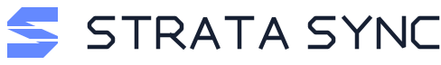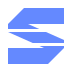기억을 잇는 하나의 S.사선과 두 개의 틈으로 만든 세 겹의 S. 또렷하고 날렵한 인상으로 제품 이름을 직접 각인합니다.Light SVGDark SVGSymbol
02 STRATA STACK층 · 축적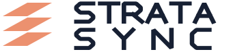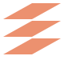일할수록, 팀의 지층이 두꺼워진다.대지의 단면 같은 테라코타 색과 세 장의 층. 두 줄로 쌓은 굵은 글자가 기억의 축적을 강조합니다.Light SVGDark SVGSymbol
03 STRATA DIALOGUE대화 · 협업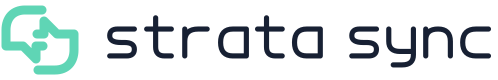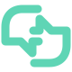너의 생각과 나의 생각이 만나는 곳.두 개의 대화 형태가 서로 맞물립니다. 민트 색과 둥근 소문자로 사람과 에이전트의 협업을 친근하게 표현합니다.Light SVGDark SVGSymbol
04 STRATA ORBIT동기화 · 확장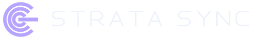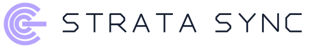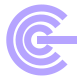각자의 궤도에서, 같은 기억으로.세 개의 열린 궤도를 하나의 축이 잇습니다. 가는 획과 넓은 자간으로 확장되는 네트워크의 차분한 인상을 만듭니다.Light SVGDark SVGSymbol
05 STRATA WEAVE직조 · 통합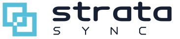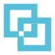여러 가닥의 생각, 하나의 팀 기억.두 사각 고리가 번갈아 겹쳐지는 직조 심볼. 청록색과 굵은 소문자, 작게 펼친 SYNC가 유연하면서 단단한 인상을 만듭니다.Light SVGDark SVGSymbol
06 STRATA MERGE합류 · 실행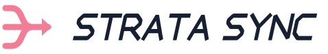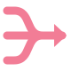세 갈래의 맥락이, 같은 방향으로.서로 다른 흐름이 한 줄의 화살표로 합쳐집니다. 코랄 색과 앞으로 기울어진 글자로 협업의 속도와 추진력을 표현합니다.Light SVGDark SVGSymbol
07 STRATA FOLIO기록 · 깊이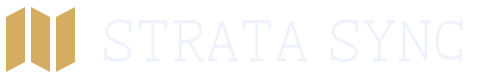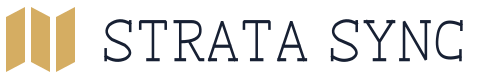펼쳐질수록 깊어지는 팀의 기억.책장과 지층을 닮은 세 개의 접힌 면. 차분한 골드 심볼과 세리프 워드마크로 오래 쌓아가는 지식의 가치를 담았습니다.Light SVGDark SVGSymbol
08 STRATA NEXUS발견 · 관계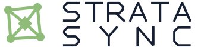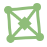흩어진 점들이, 하나의 맥락이 되는 순간.작은 별자리의 중심에 하나의 결정을 놓았습니다. 세이지 그린과 두 줄의 글자로 지식 그래프의 연결과 발견을 드러냅니다.Light SVGDark SVGSymbol